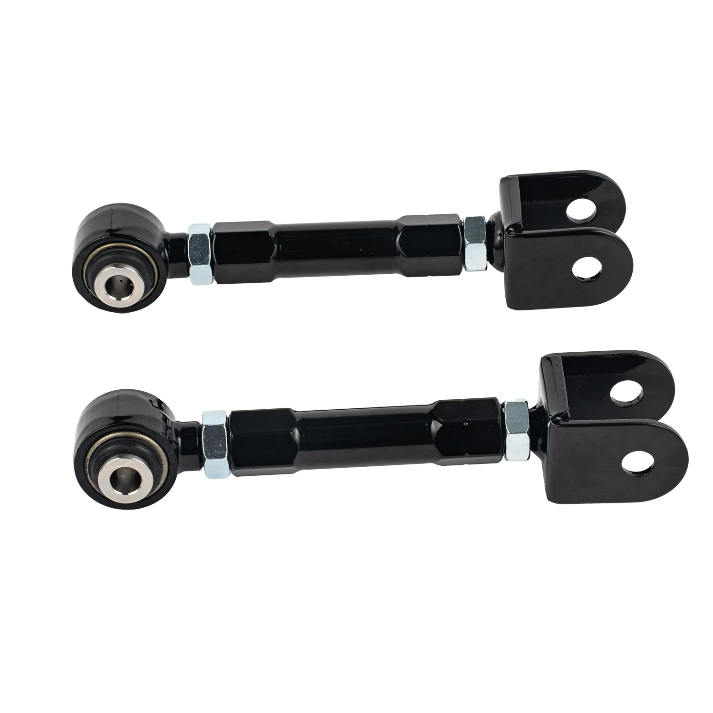

1 / 6FAPO Rear Traction Rod Do Nissan 240SX 1989-2002 S13 S14 S15 300ZX Infiniti Q45 PZ001620
Zastosowanie: Nissan Silvia / 240SX / 180SX / 200SX: S13 (1989-1994), S14 (1995-1998), S15 (1998-2002) Nissan Skyline GTR: BNR32 (1989-1994), R33/R34 (1993-2002) Nissan Skyline GTS-T: R32 (1989-1994), R33 (1993-1998) Nissan Skyline GTT: R34 (1998-2001) Nissan 300ZX / Nissan Fairlady Z: Z32 (1990-1996) Cechy produktu: Wykonane ze stopu stali o wysokiej wytrzymałości Kuty przegub kulowy z precyzyjną obróbką CNC Proces…
Application: Nissan Silvia / 240SX / 180SX / 200SX: S13 (1989-1994), S14 (1995-1998), S15 (1998-2002) Nissan Skyline GTR: BNR32 (1989-1994), R33/R34 (1993-2002) Nissan Skyline GTS-T: R32 (1989-1994), R33 (1993-1998) Nissan Skyline GTT: R34 (1998-2001) Nissan 300ZX / Nissan Fairlady Z: Z32 (1990-1996) Features: Constructed of High-Strength Steel Alloy Forged ball joint with CNC precision machining Powdercoating Process with long time Rust protection Item exactly the same as picture shown
999,99 PLN
Opis produktu
Zastosowanie:
- Nissan Silvia / 240SX / 180SX / 200SX: S13 (1989-1994), S14 (1995-1998), S15 (1998-2002)
- Nissan Skyline GTR: BNR32 (1989-1994), R33/R34 (1993-2002)
- Nissan Skyline GTS-T: R32 (1989-1994), R33 (1993-1998)
- Nissan Skyline GTT: R34 (1998-2001)
- Nissan 300ZX / Nissan Fairlady Z: Z32 (1990-1996)
Cechy produktu:
- Wykonane ze stopu stali o wysokiej wytrzymałości
- Kuty przegub kulowy z precyzyjną obróbką CNC
- Proces malowania proszkowego z długotrwałą ochroną przed rdzą
- Przedmiot dokładnie taki sam, jak pokazano na zdjęciu
Application:
- Nissan Silvia / 240SX / 180SX / 200SX: S13 (1989-1994), S14 (1995-1998), S15 (1998-2002)
- Nissan Skyline GTR: BNR32 (1989-1994), R33/R34 (1993-2002)
- Nissan Skyline GTS-T: R32 (1989-1994), R33 (1993-1998)
- Nissan Skyline GTT: R34 (1998-2001)
- Nissan 300ZX / Nissan Fairlady Z: Z32 (1990-1996)
Features:
- Constructed of High-Strength Steel Alloy
- Forged ball joint with CNC precision machining
- Powdercoating Process with long time Rust protection
- Item exactly the same as picture shown
FAPO Polska
Ten produkt obsługujemy lokalnie
Autoryzowana obsługa
FAPO Polska prowadzi katalog, kontakt i zamówienia bez odsyłania klienta do zewnętrznych sklepów.
Dobór po aucie
Sprawdzamy dopasowanie produktu do pojazdu, rocznika i wersji przed finalizacją zamówienia.
Wsparcie po zakupie
Masz kontakt w Polsce w sprawach zamówień, wysyłki, gwarancji i zwrotów.